Nagara, Chiba: things to do, food and stays
Nagara · Chiba
Nagara
Highlighted on the Chiba map.

Stay
Dear Wan Spa Garden
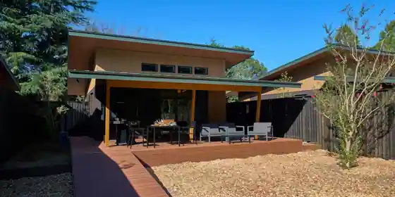
Dear Wan Spa Garden
Inn at Tototomareru Onsen in Ueno, Nagara with pet-friendly rooms.
紡ノ座
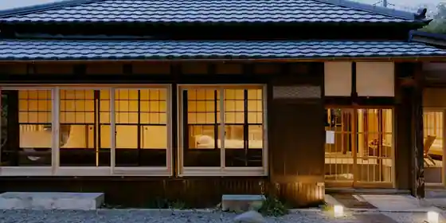
Bo No Za
Inn in Tokumasu, Nagara with one group per day and a renovated traditional house.
リソルの森
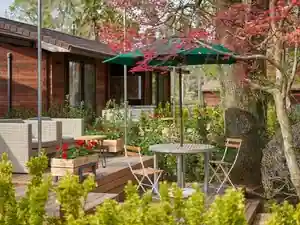
Risoru No Mori
ホテル スワンレイク長柄
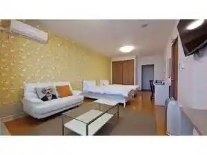
Hotel Suwanreiku Nagae
Hotel in Saraki, Nagara with business travelers.
Dining
八平の食堂
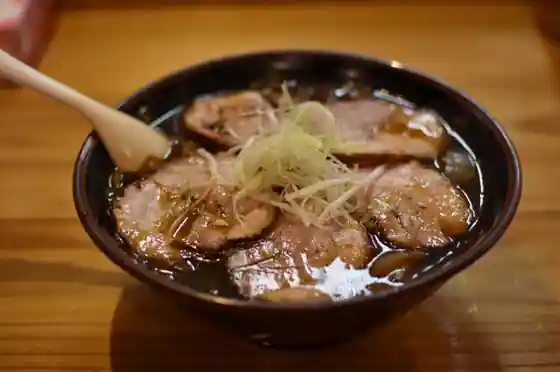
Happei No Shokudo
翠州亭
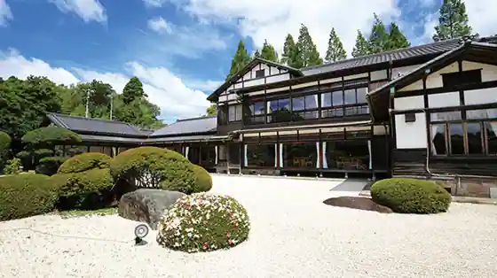
Sui Shu Tei
ながら長生庵
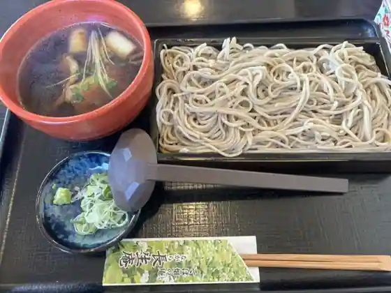
Nagara Chosei Iori
とらい
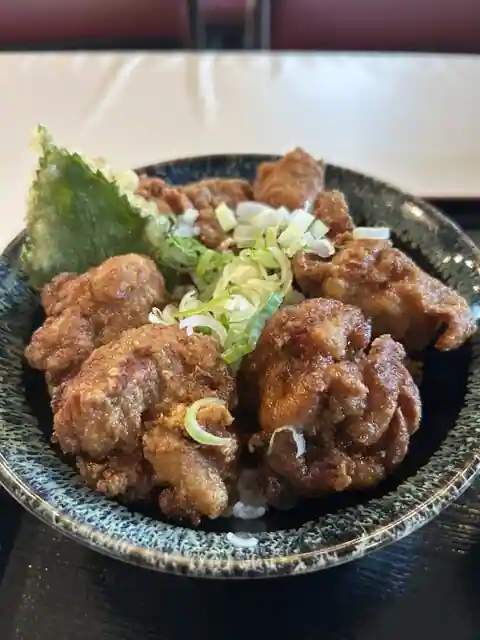
Torai
マキネッタ
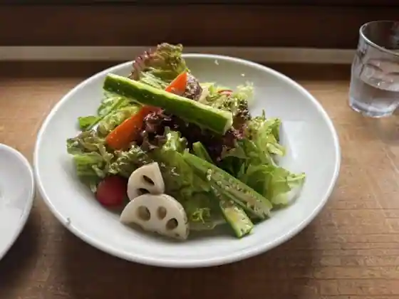
Makinetta
レストラン スポール
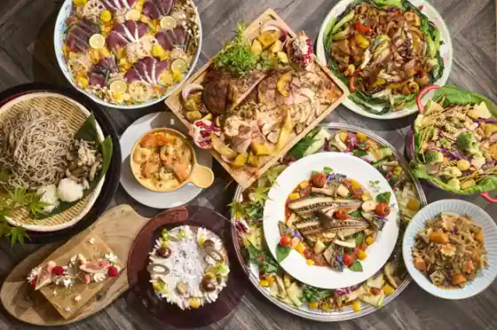
Restaurant Suporu
DEAR WAN TERRACE
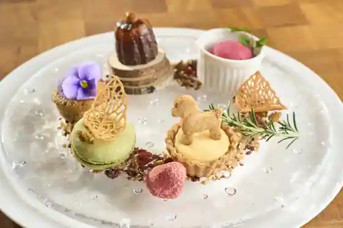
DEAR WAN TERRACE
太陽ファームキッチン
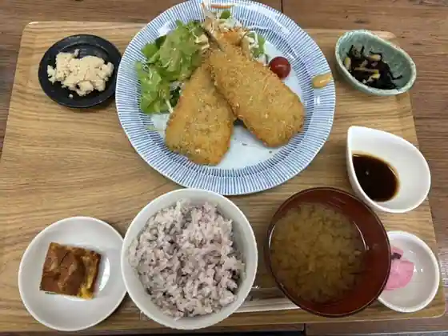
Taiyo Famu Kitchen
パティシエール ナオ
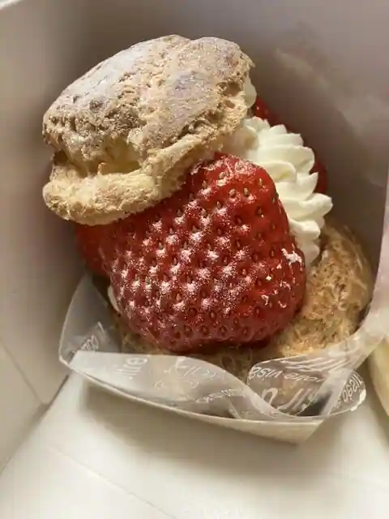
Pateishieru Nao
道の駅 ながら
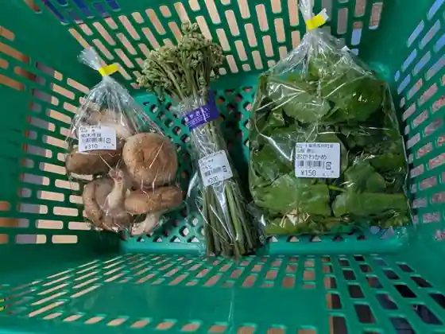
Michi No Eki Nagara
レストランブローニュ
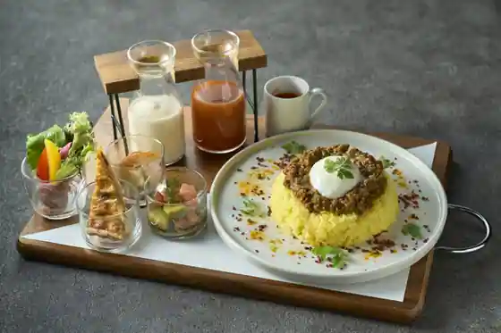
Restaurant Buronyu
だるま亭
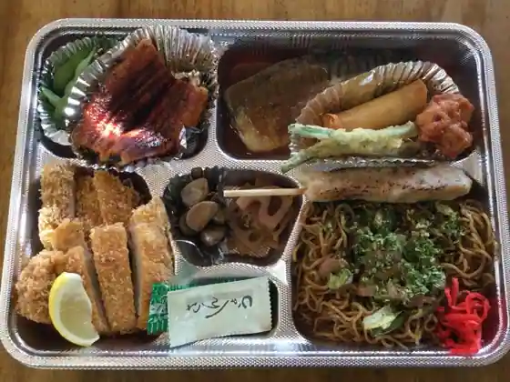
Daruma Tei
パンと菓子 VERVE
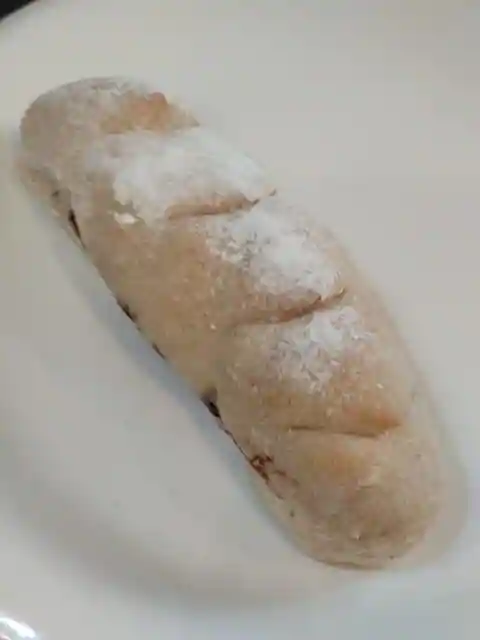
Bakery To Kashi VERVE
大地の恵み
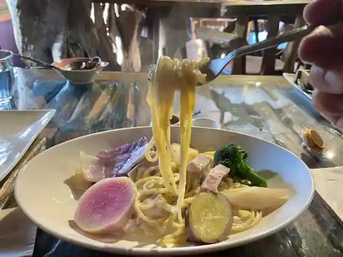
Daichi No Megumi
千葉国際カントリークラブ
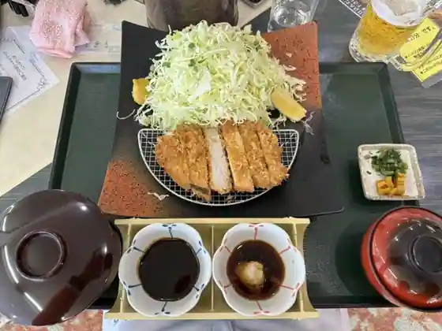
Chiba Kokusai Kantorikurabu
EGCAFE
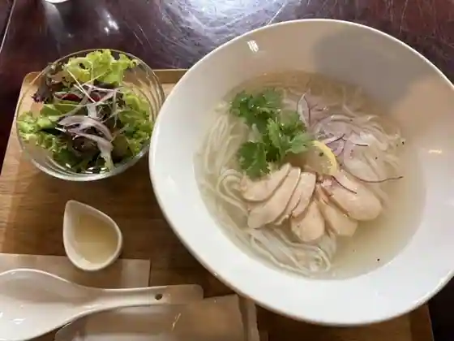
EGCAFE
ニュームラカミ
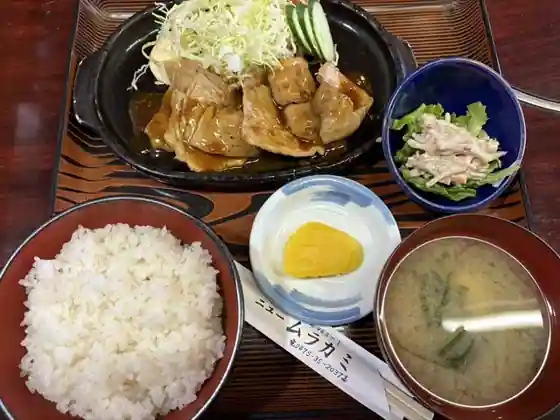
Nyumurakami
一番ラーメンがんこや 長柄店
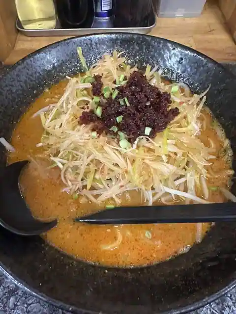
Ichiban Ramen Gankoya Nagae
太陽ファームカフェ
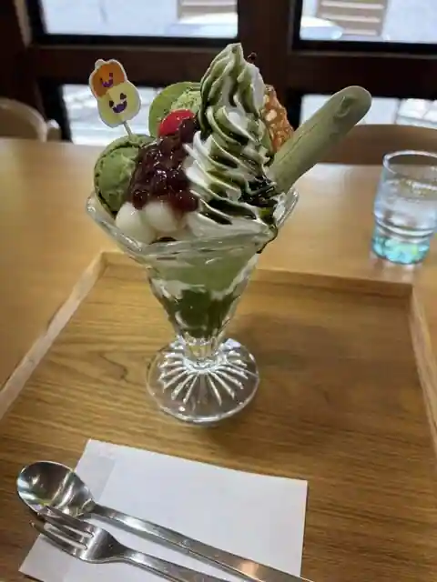
Taiyo Famu Cafe
ジンギスカン食堂
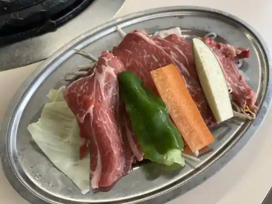
Jingisukan Shokudo
Sights
Nagara Dam

Foresutoadobencha Tazania

Roadside Station Nagara

Nagara Taiyo Farm

Sport & Do Resort Risoru Forest
Historic Site Nagara Yokoana Gun
Nagara Miyako City no Village Koryu Center Wakuwaku Nagara
TouTou Garden Glamping Villa
Ota Chujo Kensho Hi
Genzo Tera